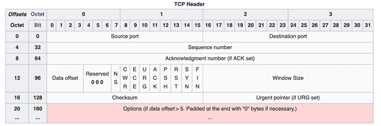

CHAPTER 07 — 보충
왜 빠른 TCP가 아닌 UDP 일까?
QUIC = Quick TCP UDP Internet Connections — 왜 TCP가 아닌 UDP일까?
❌ TCP 헤더 — 너무 복잡하다

✅ UDP 헤더 — 빈 도화지

💡
TCP는 오랜 역사 동안 수많은 표준이 정의되고 다양한 OS·브라우저·하드웨어에 구현되어 있습니다. 각기 다른 이해관계자들의 요구사항을 동시에 충족하기도 어렵고, 수정이 사실상 불가능합니다. 그래서 하얀 도화지 같은 UDP가 선택되었고, 그 위에 혼잡 제어·흐름 제어·오류 제어 등 신뢰성 로직을 직접 구현한 것이 QUIC입니다.